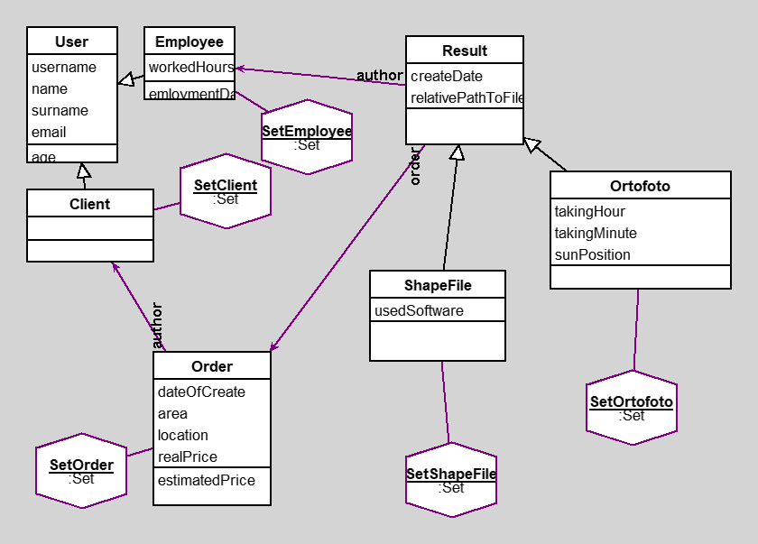

GabDetProject
author(s): Josef Korinek
Uchová informace o:
Zákaznících,
Zamestnacích,
Obednávkách
a výsledcích.
Workspace
SetOrtofoto select: [:x| x author username = 'joseko' ]
(SetOrder select: [:x| x location = 'Praha']) collect: [:y| y author]
(SetOrtofoto select: [:x| x order notNil]) collect: [:y| y order]
Workspace Objects
-
SetClient :Set
-
SetEmployee :Set
-
SetOrder :Set
-
SetOrtofoto :Set
-
SetShapeFile :Set
-
Cli_1 :Client
-
Empl_1 :Employee
-
Ord_1 :Order
-
Ort_1 :Ortofoto
-
ShaFl_1 :ShapeFile
Script
"Note that variables begining with uppercase letter will be moved into the workspace pool."
SetEmployee:= Set new.
SetClient:= Set new.
SetOrder:= Set new.
SetShapeFile:= Set new.
SetOrtofoto:= Set new.
Empl_1:= Employee new.
Empl_1 username: 'joseko';
name: 'Josef';
surname:'Korinek';
email:'koren@seznam.cz';
birtdate: '1-5-2000' asDate;
workedHours:'10' asNumber;
hourTax:'10' asNumber;
boardingDate: '10-10-2006' asDate.
SetEmployee add:Empl_1.
Cli_1:= Client new.
Cli_1 username: 'houska';
name: 'Martin';
surname:'Houska';
email:'houska@seznam.cz'.
SetClient add: Cli_1.
Ord_1:= Order new.
Ord_1 author: Cli_1;
dateOfCreate: '10-6-2016' asDate;
location: 'Praha';
area:'10' asNumber;
realPrice:'500' asNumber.
SetOrder add: Ord_1.
ShaFl_1:= ShapeFile new.
ShaFl_1 author: Empl_1;
order:Ord_1;
createDate: '6-16-2016' asDate;
relativePathToFile:'asdf/movie';
usedSoftware: 'Qgis'.
SetShapeFile add:ShaFl_1.
Ort_1:= Ortofoto new.
Ort_1 author: Empl_1;
order:Ord_1;
createDate: '6-16-2016' asDate;
relativePathToFile:'asdf/movie';
takingHour:'11' asNumber;
takingMinute:'21' asNumber;
sunPosition: 'nad hlavou'.
SetOrtofoto add:Ort_1.
Diagram

Classes
User
|
instance variables
birtdate :Date
email :String
name :String
surname :String
username :String
|
methods
age
birtdate
birtdate:
email
email:
initialize
name
name:
surname
surname:
username
username:
|
|
|
code of non-accessing methods:
-
age
birtdate isNil
ifTrue: [^nil]
ifFalse: [^((Date today subtractDate: birtdate) / 365.2422) truncated]
-
initialize
"generated by Daskalos"
super initialize.
username := nil.
name := nil.
surname := nil.
email := nil.
birtdate := nil.
Order
|
instance variables
area :Number
author :Object
dateOfCreate :Date
location :String
realPrice :Number
|
methods
area
area:
author
author:
dateOfCreate
dateOfCreate:
estimatedPrice
initialize
location
location:
realPrice
realPrice:
|
|
|
code of non-accessing methods:
Result
|
instance variables
author :Object
createDate :Date
order :Object
relativePathToFile :String
|
methods
author
author:
createDate
createDate:
initialize
order
order:
relativePathToFile
relativePathToFile:
|
|
|
code of non-accessing methods:
Client
|
instance variables
|
methods
|
|
|
code of non-accessing methods:
Employee
|
instance variables
boardingDate :Date
hourTax :Number
workedHours :Number
|
methods
boardingDate
boardingDate:
emloymentDays
hourTax
hourTax:
initialize
workedHours
workedHours:
|
|
|
code of non-accessing methods:
ShapeFile
|
instance variables
usedSoftware :String
|
methods
initialize
usedSoftware
usedSoftware:
|
|
|
code of non-accessing methods:
Ortofoto
|
instance variables
sunPosition :String
takingHour :Number
takingMinute :Number
|
methods
initialize
sunPosition
sunPosition:
takingHour
takingHour:
takingMinute
takingMinute:
|
|
|
code of non-accessing methods:
Links
Data file and
class source.
Generated by Daskalos - Object Modeling Tutor (C) 2006 V. Merunka
May 12, 2022